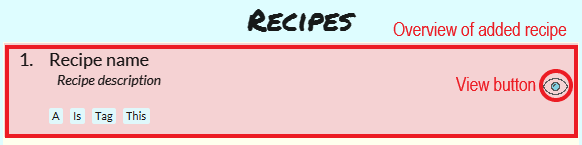
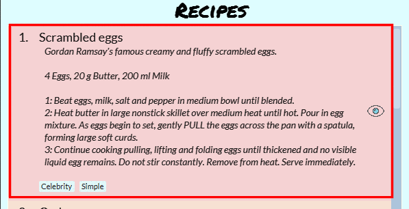

Overview
Cooking Papa is a desktop cookbook application used to manage recipes and ingredients for cooking. The user interacts with it using a CLI, and it has a GUI created with JavaFX. It is written in Java, and has about 15 kLoC.
Summary of contributions
-
Major enhancement: implemented and developed Cooking Papa’s GUI
-
What it does: developed Cooking Papa’s GUI to better reflect its casual usage and more cheerful nature, rather than the base AB3’s dark theme.
-
Justification: This feature improves the product significantly because the color scheme is more in line with Cooking Papa’s use, with the bright yet muted colors complementing the fun font styles, giving off a casual vibe, and invites users to use Cooking Papa.
-
Highlights: This enhancement required a lot of understanding of the interactions between various JavaFX objects, as well as the base CSS stylesheets provided by AB3, and integrating them together, which took many hours of trial-and-error, as well as Googling.
While constraints meant that Cooking Papa would be tested from the command line, a well-designed GUI was imperative to convey the application’s casual nature. Coordinating various colors proved to be a challenge, and the color scheme went through three rounds of reiterations, before settling on the current one. Moving away from the rigid sharp edges of AB3 was also a challenge, and required various UI elements and color choices to "soften" the overall aesthetics of Cooking Papa.
-
Credits: JavaFX 11 as well as SceneBuilder helped immensely in the development of the GUI.
-
-
Major enhancement: integrated
cookbook view recipecommand into the GUI-
Justification: This feature improves the product significantly because it integrated the GUI seamlessly with the command.
-
Highlights: This enhancement arose due to the lack of connection between the existing
cookbook view recipecommand, which shows users the details of a recipe, and the GUI. It was initially displayed as a plain text result in the result display box of the GUI, and this causes command results (errors, success messages, usage messages), to appear in the same UI component as the recipe details, which meant that the component had two uses.The idea to make
cookbook view recipea button on the GUI that could be toggled surfaced to improve user experience. Developing a button that could toggle the details shown was trivial, however, limiting the command to just a button on the GUI meant that it would not be testable on the command line. Therefore, the challenge was to connect the GUI to the Logic component, and typingcookbook view recipeon the command line (or in the command box of the GUI) would trigger the button. The result was a GUI much more interactive and functional, but it was still testable on the command line. -
Credits: JavaFX 11 as well as SceneBuilder helped immensely in the development of the
cookbook view recipebutton.
-
-
Minor enhancement: added an command which allowed users to export the ingredients in their cart to a PDF file, which allows them bring along with them to the supermarkets. This feature solved the constraint of the application being desktop-only, and with it, Cooking Papa can still help users when they are away from their computers.
Credits: Apache PDFbox and mkl on StackOverflow for a great example on using
PDFbox. -
Minor enhancement: regularly reviewed source code, and carried out testing and bug fixing. This includes the standardisation of coding style and messages shown to the user ( #122, #228, #242).
-
Code contributed: [Source code]
-
Other contributions:
-
Project management:
-
Managed releases
v1.2.1andv1.3(2 releases) out of 5 releases(v1.1,v1.2,v.1.2.1,v1.3,v1.4) on GitHub -
Managed features development under Project on GitHub (features)
-
-
Enhancements to existing features:
-
Documentation:
-
Community:
-
Tools:
-
Integrated a third party library (Apache PDFbox) to the project (#212)
-
Integrated new Github plugins to the team repo: TravisCI, AppVeyor, Coveralls, Codacy
-
-
Contributions to the User Guide
Given below are sections I contributed to the User Guide. They showcase my ability to write documentation targeting end-users. |
Help Command (by Teo Jun Xiong)
This command shows a popup window with a URL to Cooking Papa’s user guide (what you are reading now). This is for access should you need some help executing a certain action in Cooking Papa.
There are 2 ways a user can access the help window:
-
Type
help. -
Click on the
Helpbutton on the top left corner of Cooking Papa, and then click on theHelpbutton in the dropdown menu. You can then click theCopy URLbutton which can then be pasted into a web browser to access Cooking Papa’s user guide.
Exit Command (by Teo Jun Xiong)
There are 3 ways a user can exit Cooking Papa:
-
Type
exit. -
Click on the
xbutton on the top right corner of the Cooking Papa. -
Click on the
Filebutton on the top left corner of Cooking Papa, and then click on theExitbutton in the dropdown menu.
Calendar Commands [v2.0] (by Teo Jun Xiong)
Calendar commands are commands that allow you to set date-related commands, such as reminders and recipe of the day
Add a recipe to cook on a certain day
Reminds the user to cook a certain recipe on a certain day.
-
Format:
calendar set DD-MM-YYYY cook recipe INDEX -
Example:
| Command | Result |
|---|---|
|
Adds recipe 1 to your calendar for cooking on 10th October 2020. |
View recipes to cook on a certain day
User can view the recipes they were supposed to cook on a certain day. The date input can be replaced with 'today' for the current date, or 'tomorrow' for the next day.
-
Format:
calendar view recipes DD-MM-YYYY -
Example:
| Command | Result |
|---|---|
|
Shows the recipes scheduled for cooking on 10th October 2020. |
|
Shows the recipes scheduled for cooking on the current day. |
|
Shows the recipes scheduled for cooking on the day after the current day. |
FAQ (by Teo Jun Xiong)
Q: How do I transfer my data to another Computer?
A: Install the app in the other computer and overwrite the empty data file it creates with the file that contains the data of your previous CookingPapa folder.
Q: Where can I install the latest version of CookingPapa?
A: You can find the latest release here. Please download
the latest version of CookingPapa.jar to enjoy the most udpated features.
Q: Do I need to be connected to the internet to access this application?
A: All information is stored locally in your own computer. No internet connection is required.
Q: Something is not working as expected. Who can I contact?
A: You may report your bugs here here. Bug reports are highly
appreciated!
Q: Is this application free?
A: Yes! This application is open-source under the MIT license. You may feel free to modify, contribute and share
this application with the community!
Contributions to the Developer Guide
Given below are sections I contributed to the Developer Guide. They showcase my ability to write technical documentation and the technical depth of my contributions to the project. |
Implementation of a core feature: cookbook add recipe
Below is a step by step sequence of what happens when a user enters this command:
-
The user enters a recipe adding command using the command line input
cookbook add recipe n/NAME d/DESCRIPTION [i/INGREDIENT]… [q/QUANTITY]… [s/STEP_DESCRIPTION]… [t/TAG]…. -
CookingPapaParserparses the user input and checks if it is valid. If it is invalid, i.e. an unknown command category, aParseExceptionwill be thrown. If the input is valid, with the command categorycookbook, a newCookbookCommandParseris created. -
CookbookCommandParserthen parsesadd recipe n/NAME d/DESCRIPTION [i/INGREDIENT]… [q/QUANTITY]… [s/STEP_DESCRIPTION]… [t/TAG]…. If it is invalid, i.e. an unknown command word, aParseExceptionwill be thrown. If the input is valid, with the command wordadd, a newCookbookAddCommandParseris created. -
CookbookAddCommandParserparsesrecipe n/NAME d/DESCRIPTION [i/INGREDIENT]… [q/QUANTITY]… [s/STEP_DESCRIPTION]… [t/TAG]…and checks ifn/NAMEandd/DESCRIPTIONare provided. If either are not provided, then aParseExceptionwill be thrown.It then parses the input into the following fields: recipe name, recipe description, ingredients, steps, and tags.
Note that the ingredient names and ingredient quantities provided must be the same, or a
ParseExceptionwill be thrown:if (names.size() != quantities.size()) { throw new ParseException( String.format(MESSAGE_DIFFERENT_NUMBER_OF_INPUTS, names.size(), quantities.size())); } -
These fields are then passed as parameters for
Recipe, which is then passed as the parameter forCookbookAddCommandand returned toLogicManager. -
LogicManagercallsCookbookAddCommand#execute()which checks if the cookbook already contains the same recipe with the same name, description, ingredient names, ingredient quantities, and tags usingModel#hasCookbookRecipe().If there is a duplicate, a
CommandExceptionis thrown, stating that the user is attempting to add a duplicate recipe:if (model.hasCookbookRecipe(toAdd)) { throw new CommandException(MESSAGE_DUPLICATE_RECIPE); } -
If
CommandExceptionis not thrown,Model#addCookbookRecipewill be executed, with the recipe to be added as a parameter. -
Model#addCookbookRecipe()then executesCookbook#addRecipe(), which adds the recipe to the cookbook, and theFilteredList<Recipe>representing the recipes in the cookbook are updated withModel#updateFilteredCookbookRecipeList():updateFilteredCookbookRecipeList(PREDICATE_SHOW_ALL_RECIPES)where
PREDICATE_SHOW_ALL_RECIPES = unused → true. -
A
CommandResultwith the text to display to the user is then returned toLogicManager, which can passed back toMainWindow, which displays it to the user on the CLI and GUI:resultDisplay.setFeedbackToUser(commandResult.getFeedbackToUser()). The text displayed will notify the user on whether their addition was successful.
UML Sequence Diagram for a core feature: cookbook add recipe
The following activity diagram shows a possible flow of events for a user using this feature:
Crucial Design Considerations for a core feature: cookbook add recipe
Aspect 1: How to parse optional parameters
Design A (current choice): Parse each category separately |
Design B: Parse all the categories together |
|
Description |
Each category (ingredient name, ingredient quantity, step description, tag) are parsed separately and returned as
|
Each category will be parsed together in one function in |
Pros |
|
|
Cons |
|
|
Design A was chosen because it was more user-friendly, and removed the restriction of having to include ingredients, steps, and tags at the stage of recipe creation, some of which the user may not have at the moment, i.e. experimenting with different ingredients. Additionally, design A allowed us to be more modular while coding.
Aspect 2: Result to show user
Design A (current choice): Show a short result on the success of the command |
Design B: Show all the details back to the user |
|
Description |
Show a message to a usage which notifies them that the command was successful in adding the recipe to the cookbook. |
Shows a message similar to design choice A, and also show all the details of the added recipe. |
Pros |
|
|
Cons |

|
|
Design A was chosen because it did not reuse the same component for multiple uses. Additionally, it allows us to reduce the size of result display, as most of the time, it displays only a short message displaying the success of a command.
Implementation of a core feature: cart export
Below is a step by step sequence of what happens when a user enters this command:
-
The user enters a cart export command using the command line input
cart export. -
CookingPapaParserparses the user input and checks if it is valid. If it is invalid, i.e. an unknown command category, aParseExceptionwill be thrown. If the input is valid, with the command categorycart, a newCartCommandParseris created. -
CartCommandParserthen parsesexport. If it is invalid, i.e. an unknown command word, aParseExceptionwill be thrown. If the input is valid, with the command categoryexport, a newCookbookExportCommandParseris created. -
CartExportCommandParserparses the user input and checks if the argument passed to it is an empty String, as the command takes in no extra parameters.Note that if the String is not empty, a
ParseExceptionwill be thrown:if (userInput.isEmpty()) { return new CartExportCommand(); } else { throw new ParseException(String.format(MESSAGE_INVALID_COMMAND_FORMAT, CartExportCommand.MESSAGE_USAGE)); }This means that
cart export ingredientwill not work. -
CartExportCommandParserthen returns aCartExportCommandtoLogicManager. -
LogicManagercallsCartExportCommand#execute()calls the static method ofPdfExporter,PdfExporter#exportCart(), which takes in theObservableList<Ingredient>stored inCart -
Step 4 is executed within a try-catch block. If a previously generated pdf (saved as
cart.pdfby default) is opened in another program, or there is an issue writing to the PDF file, aCommandResultwith an error message will returned toLogicManager(skipping step 7 and 8):try { PdfExporter.exportCart(model.getCart().getIngredientList()); } catch (IOException e) { return new CommandResult(MESSAGE_FILE_NOT_FOUND); } -
The ingredients in the
Cartis passed to the static methodPdfExporter#exportCart(), which then makes use of the library,PDFbox, to parse the data. -
Within
PdfExporter,PdfExporter#getTextFromCartparse the data and splits them manually, in order to wrap the text (this has to be done due to the inadequacy ofPDFbox). The method returns aList<String>, where each string represents a new line on the PDF file. -
Subsequently,
PdfExporterchecks if the number ofStrings in the list in step 7 is greater than the number of lines a single page of the PDF can accomodate. If it is, it adds a new page, and adds lines to the PDF until the limit is hit. This repeats until all the lines are added to the PDF. -
A
CommandResultwith the text to display to the user will be returned toLogicManager. TheCommandResultis then passed back toMainWindow, which displays it to the user on the CLI and GUI:resultDisplay .setFeedbackToUser(commandResult.getFeedbackToUser()). The text displayed will notify the user on whether their addition was successful.
UML Sequence Diagram for a core feature: cart export
Implementation of a core feature: cookbook view recipe
Below is a step by step sequence of what happens when a user enters this command:
-
The user enters a view recipe command using the command line input
cookbook view recipe INDEX. -
CookingPapaParserparses the user input and checks if it is valid. If it is invalid, i.e. an unknown command category, aParseExceptionwill be thrown. If the input is valid, with the command categorycookbook, a newCookbookCommandParseris created. -
CookbookCommandParserthen parsesview recipe INDEX. If it is invalid, i.e. an unknown command word, aParseExceptionwill be thrown. If the input is valid, with the command categoryview, a newCookbookViewCommandParseris created. -
CookbookViewCommandParserthen parsesrecipe INDEXand checks if theStringcontains "recipe", and an index. If either are absent, aParseExceptionwill be thrown. If theStringis valid, aCookbookViewis created. -
CookbookViewCommandParserthen returns aCookbookViewCommandtoLogicManager. -
LogicManagercallsCookbookViewCommand#execute()which checks if the providedIndexis within the bounds of theFilteredCookbookRecipeList()inCookbook, i.e.index.getZeroBased() >= list.size(). If it is not, aCommandExceptionwill be thrown. If it is valid, aCommandResultis created with a boolean valuetrue. -
A
CommandResultwith the text to display to the user will be returned toLogicManager. TheCommandResultis then passed back toMainWindow. The boolean value stated in step 6 determines whether a successfully parsed command is acookbook view recipe INDEXcommand. -
MainWindow#handleViewRecipeis then executed, which creates a newCookbookPanelwith the same set of data, callingCookbookPanel#handleViewRecipe, which creates newRecipeCards forCookbook, and for theRecipeCardthat has an index equal to the index processed from the user’s input, it will create aRecipeCardthat toggles open the recipe details. More on how theRecipeCardmanages this will be discussed in the following section on how clicking on a button in the GUI has the same effect as thecookbook view recipe INDEXcommand. -
Lastly, the user then is shown a
CookbookPanelwith the selected recipe toggled open, which displays the full details of that recipe:
Below is a step by step sequence of what happens when a user clicks the button on the GUI:
-
When the button is pressed, the onAction method,
RecipeCard#handleViewButtonAction()is executed. ARecipeCardhas a variableisFullyDisplayed, which indicates whether it is displaying an overview of the recipe, or fully displaying details of the recipe. -
If
isFullyDisplayedis false, i.e. theRecipeCardis currently displaying an overview of the recipe,RecipeCard#displayRecipeComplete()is executed, which replaces the text displayed by the FXML object,Label, with the full details of the recipe. -
If
isFullyDisplayedis true, i.e. theRecipeCardis currently fully displaying the details of the recipe,RecipeCard#displayRecipeOverview()is executed, which replaces the text displayed by the FXML object,Labelwith the overview of the recipe. -
Both methods executed in step 3 and 4 will flip the boolean value of
isFullyDisplayed, and this means that the next time the button for the same recipe is clicked, it toggles back. For example, if a recipe with its overview shown has its view button clicked, it will show the full details of the recipe. If the button is clicked again, it toggles, and shows the overview of the recipe.This feature is not reflected with
cookbook view recipe INDEXwhen it is entered again in the command line, because the function of the command is to view a recipe, not to "un-view" it.
UML Sequence Diagram for a core feature: cookbook view recipe
The following sequence diagram shows how the recipe viewing function interacts between the classes in Logic:
The following sequence diagram shows how the recipe viewing function interacts between the classes in Ui: